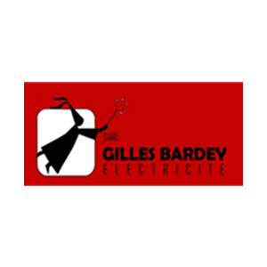
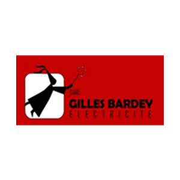

Autour de la table, Jérôme Nossein et Séphane Carrière éclatent de rire devant un tel challenge.
L'humour cède alors la place à la passion et aux grandes idées; tombe alors le fameux «et pourquoi pas ?»
Une feuille blanche reçoit immédiatement les premiers traits, les idées fusent et déjà les choix techniques se décident.
Tout naturellement et unanimement, le choix de la
T4 est adopté .
Petite voiture, 4x4, légère, proche du prototype car
seulement une cinquantaine d'exemplaires existent, une
bonne partie d'improvisation et de choix techniques
possibles laissent une grande part à notre créativité.
Après 2 participations à la ronde du Jura, un
collectionneur nous contacte pour nous acheter notre
bolide ... Que faire alors ?
Jérôme, fan de véhicules anciens me dit : «Mon Rêve, une Ford Mk2 groupe 4 (ex WRC de l'époque).»
Projet ambitieux, une nouvelle aventure commence. Le
plaisir de redonner vie à un véhicule ancien nous
emballe.
Rien ne nous arrêtera dans ce défi.
On trouve une coque de 1979 et de
nombreuses pièces en Irlande, un moteur en Belgique et
une boite de vitesses en Italie... les voyages forment
la jeunesse.
Trois années seront nécessaires pour
résoudre les approvisionnements en pièces, les problèmes
techniques et les investissements financiers personnels
conséquents, propres à ce type de véhicule, et pour
l'aboutissement à cette bête de course de
254 cv à 8000 trs/min.
Notre expérience au niveau mondial fera que nous adopterons des choix techniques proches du WRC, à commencer par le faisceau électrique, entièrement réalisé par Jérôme en fil d'argent et connectique aviation.
Le rallye historique est une discipline en plein essor.
En effet depuis 3-4 ans, même les pilotes les plus chevronnés viennent s'affronter avec des véhicules âgés de plus de 30 ans.
Depuis cette année, le premier championnat de France aura lieu sur 12 manches.
Deux types d'engagement existent :
-Le rallye pur, cela consiste à boucler la totalité des secteurs chronométrés (E.S) en un temps record.
-Le rallye de régularité, qui consiste à parcourir l'ensemble des spéciales en s'approchant au plus près de la vitesse moyenne définie par l'organisateur.
| Carrosserie | |
|---|---|
| Caisse | Berline |
| Type | 2 portes entièrement ressoudée |
| Arceau | Safety Device type cage en acier |
| Kit carrosserie | Ford voies larges groupe 4 |
| Train Avant | |
|---|---|
| Voie | 1640 mm |
| Type | Mc Pherson |
| Geometrie | Bras tirés |
| Moyeux | Acier base d'origine |
| Amortisseurs | Soben |
| Freins | Etrier alu 4 pistons type Monté Carlo |
| Roues | Jantes 8x13 Minilite |

| Train Arrière | |
|---|---|
| Voie | 1640 mm |
| Type | Pont rigide |
| Amortisseurs | Soben |
| Freins | Etrier alu 2 pistons |
| Roues | Jantes 9x13 Minilite |
| Moteur | |
|---|---|
| Type | 4 cylindres atmo |
| Alésage x Course | 90mmX77mm |
| Cylindrée | 1975cm³ |
| Admissions | 1Admissions 2 carburateurs double corps Weber |
| Echappement | Inox |
| Puissance | 254 cv |
| Couple | 23m/kg |
| Régime Maxi | 9000 tr/min |
| Boîte de vitesse | |
|---|---|
| Type | ZF manuelle à 5 rapports |
| Pont | Rapport 5.14 |
| Embrayage | Bi disques Hydraulique |
| Divers | |
|---|---|
| Instrumentation Stack | |
| Frein à main Hydraulique | |
| Repartiteur de frein à palonier | |
| Réservoir alu | |
| Vitres Makrolon | |
Le sport automobile est exigeant et il n'est pas nécessaire de rappeler que la compétition ne serait pas possible sans vous !
Avec une voiture de pointe, des déplacements conséquents et une assistance nécessaire pour les courses, les budgets deviennent très importants si l'on veut s'engager dans ces épreuves mythiques.
Ce rêve ne deviendra réalité qu'avec votre aide et votre soutien.
Quel honneur pour nous de pouvoir, sur les épreuves auxquelles nous participerons, porter vos couleurs et montrer que la fusion de notre passion et de vos intérêts commerciaux peut aboutir à gagner ce challenge.
 
